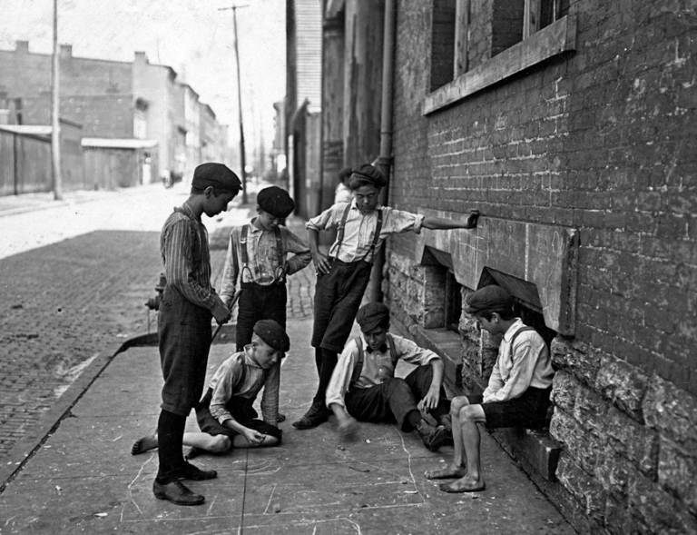
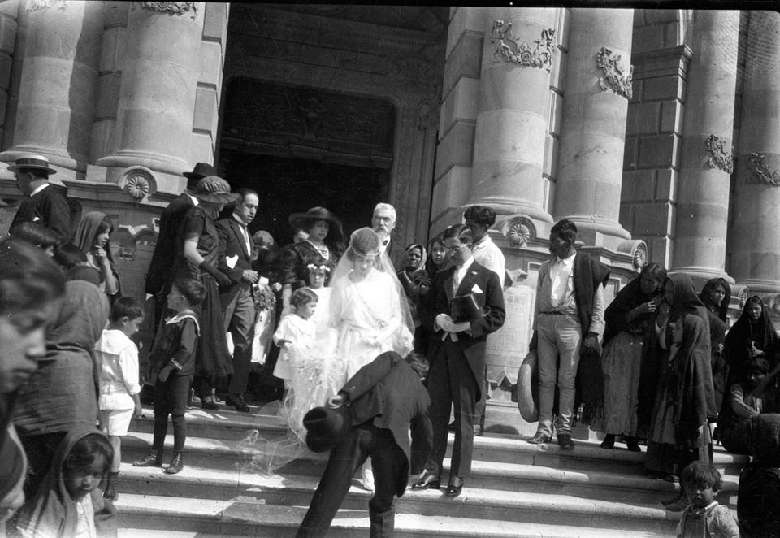

Niñez
Nació el 11 de Marzo de 1948. Fue hijo de Rafaela y José María, Rafaela tuvo 7 hijos y Luis era el sexto. Su madre trabajaba como ama de casa y su padre de jolatero, esta profesión trata de formar objetos de metal. Su padre murió a la edad de 25 años, dejando a la madre sola y al cargo de 7 hijos. Asuntos sociales les quito a los hijos más pequeños. Luis y a su hermano mayor Rafael, estuvieron en un internado.
Juventud
Aunque en su adolescencia lo paso muy mal consiguió la oportunidad de estudiar. En vacaciones conoció a Carmen una linda muchacha. A la edad de 16 años, llamaron a Luis para ir al servicio militar que duraba 22 meses ; dejando a Carmen su amada a cargo de sus dos hijos y con otro en camino.
Matrimonio e Hijos
A los 14 años se caso con Carmen, se mudaron juntos y tuvieron su primer hijo José, al poco tiempo tuvieron otro hijo Rafael. Despues de haberse ido al servicio militar tuvo su tercer hijo, bueno en este caso hija que se llamo Carmen en honar a su madre. Luego de volver del servicio militar busco trabajo, pero la cosa estaba mal y se marcho a otro sitio donde trabajando al principio en la vendimia ( en la uva) y después en la construcción. Cuando regreso con Carmen para ver el nacimiento de su cuarto hijo(Luís), se mudaron a donde estaba Luis; después tuvo dos hijas más Sandra y Raquel, en total tuviron 6 hijos. Llevando una vida fructífera, viendo crecer a sus hijos y como ellos formaban sus propias familias.
Anécdotas
Cuando Luis estaba en el servicio militar y le toco dejar a Carmen con sus dos hijos y otro en camino y esta se puso de parto, el Coronel no le permitio salir del cuartel, entoces él se escapo del cuartel para ver el nacimiento de su tercera hija (Carmen). A los pocos días se lo llevaron arrestado, mandándolo al cuartel de Álmeria ( Aviator La Legión), donde lo paso muy mal, días mas tarde Carmen consiguió hablar con el coronel y explicarle la situación, donde él dio a Luis a pernorta, librándolo asi del servicio militar.
Otra de las anécdotas que recuerda es que un día estaba deseando coger el coche y todos le llevábavan la contraria, pero se monto y cuando arranco le dio al coche de delante y todos soltaron la carcajada.